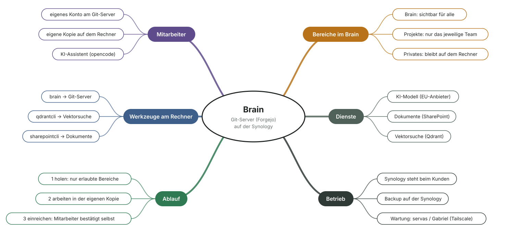

servas.ai · Produktblatt
Brain auf der Synology
Das gemeinsame Firmenwissen für die KI-Assistenten Ihrer Mitarbeiter. Es liegt auf Ihrer eigenen Synology, und jeder Mitarbeiter sieht nur, wofür er freigeschaltet ist.
Daten bleiben im HausWissen und Verlauf liegen auf Ihrer Synology.
Rechte je MitarbeiterJede Person hat ein eigenes Konto.
KI-Modell aus der EUAngebunden über einen EU-Anbieter.
Das Produkt
Im Brain steht, wie Ihr Unternehmen arbeitet: Abläufe, Entscheidungen, Fehlerbilder, Ansprechpartner und wo welche Dokumente liegen. Der KI-Assistent jedes Mitarbeiters greift bei der täglichen Arbeit darauf zurück.
Was der Assistent dabei Neues erfährt, hält er im Brain fest. Der Mitarbeiter gibt es frei, danach steht es allen Berechtigten zur Verfügung. So wächst das Firmenwissen mit jeder erledigten Aufgabe.

Lieferumfang
| Git-Server auf der Synology | Forgejo, eingerichtet auf Ihrer vorhandenen Synology. Dort liegt das gesamte Wissen, inklusive Verlauf und Backup. |
| Konto je Mitarbeiter | Eigenes Konto für jede Person. Rechte werden pro Person und Projekt vergeben. |
| Brain-Vorlage | Fertige Struktur für Firmenwissen, Projekte und private Notizen, samt Regeln, nach denen der Assistent liest und schreibt. |
| KI-Assistent | opencode auf jedem Arbeitsplatz, angebunden an ein KI-Modell eines EU-Anbieters. |
| Werkzeuge am Arbeitsplatz | Abgleich mit dem Git-Server sowie Anbindung an SharePoint und an die Vektorsuche Qdrant, jeweils mit dem Login des Mitarbeiters. |
| Einrichtung und Wartung | Durch servas.ai über einen eigenen, abgesicherten Wartungszugang (Tailscale). |
Nutzen im Alltag
Antworten statt SuchenDer Assistent findet das passende Wissen, auch bei tausenden Einträgen.
Direkter EinstiegProjektnummern, Normen oder Fehlercodes führen ohne Umweg zum richtigen Eintrag.
Dokumente im ZugriffInhalte aus SharePoint und der Vektorsuche holt der Assistent bei Bedarf dazu.
Wiederkehrende AufgabenDer Assistent kennt feste Abläufe und erinnert, wenn etwas fällig ist.
Schnelle EinarbeitungNeue Kollegen fragen ihren Assistenten statt der erfahrenen Kollegen.
Wissen bleibt in der FirmaWas jemand herausfindet, steht danach allen Berechtigten zur Verfügung.
Ablauf
HolenBeim Start holt sich der Arbeitsplatz den aktuellen Stand von der Synology.
ArbeitenDer Mitarbeiter arbeitet mit seinem Assistenten, der das Brain nutzt und Neues festhält.
EinreichenDer Assistent zeigt, wer die Änderung sehen wird. Der Mitarbeiter bestätigt sie selbst.
Rechte und Datenschutz
| Sichtbarkeit | Jeder sieht nur, wofür sein eigenes Konto freigeschaltet ist. Es gibt keinen zentralen Dienst, der für alle mitliest. |
| Bereiche | Firmenwissen für alle, Projekte nur für das jeweilige Team, Privates bleibt auf dem eigenen Rechner. |
| Speicherort | Ausschließlich auf Ihrer Synology, Backup ebenfalls dort. |
| Nachvollziehbarkeit | Jede Änderung ist mit Person, Zeitpunkt und Inhalt dokumentiert. |
Voraussetzungen
| Synology | Mit Container Manager. |
| Arbeitsplätze | Windows, macOS oder Linux. |
| KI-Modell | Zugang zu einem EU-Anbieter. |
| Optional | SharePoint und Qdrant, falls dort bereits Dokumente oder Suchdaten liegen. |